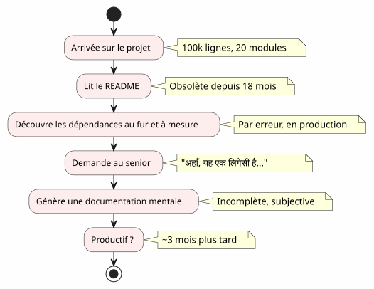
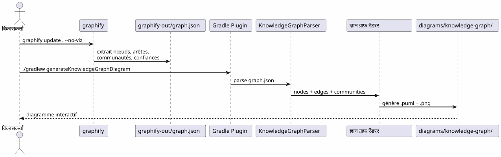
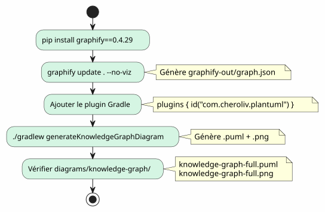
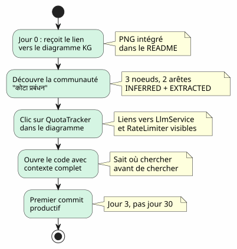

Knowledge Graph कोडबेस समझने का एक उपकरण
Publié le 20 April 2027
- �ऑनबोर्डिंग की दीवार
- एक Knowledge Graph क्या है ?
- समझ के 4 स्तर
- हारा हुआ संदर्भ: एक वास्तविक परिदृश्य
- पाइपलाइन : एक कमांड में वैकल्पिक कोड
- किनारों के प्रकार : विश्वास क्या कहता है
- अपनी खुद की Knowledge Graph बनाने में 5 मिनट
- ऑनबोर्डिंग के लिए मूल्य: अनाइस का संशोधित परिदृश्य
- दैनिक नेविगेशन के लिए मूल्य
- सीमाएँ और संभावनाएँ
- निष्कर्ष
आप 100,000 लाइनों के एक प्रोजेक्ट पर पहुंचते हैं। बीस मॉड्यूल, सौ क्लासेस, अदृश्य निर्भरताएँ, भुलाए गए रिफैक्टरिंग का इतिहास। README माइक्रोसर्विसेस आर्किटेक्चर का वादा करता है लेकिन कोड कुछ और कहता है। उत्पादक होने में कितना समय लगेगा?तीन महीने— यदि आप भाग्यशाली हैं। और यदि कोड की इंटरैक्टिव मानचित्र, स्वचालित रूप से उत्पन्न, इसे तीन दिनों में कम कर सके?
- सामग्री की सूची
-
[]
�ऑनबोर्डिंग की दीवार
हर डेवलपर ने इस दृश्य को अनुभव किया है:
-
दिन 1 : हम आपको README दिखाते हैं (अंतिम अद्यतन: 18 महीने पहले)
-
दिन 3: आप पता लगाते हैं कि मॉड्यूल`billing`मॉड्यूल को गुप्त रूप से बुलाता है`notification`
-
दिन 7 : एक वरिष्ठ आपसे बताता है, "अहाँ, हाँ, यह क्लास वास्तव में दो चीज़ें करती है, हमने इसे विभाजित करने की योजना बनाई थी
-
दिन 14 : आप महसूस करते हैं कि सारी व्यापारिक बुद्धिमत्ता में है`utils/LegacyHelper.java`— एक फ़ाइल जो कहीं भी संदर्भित नहीं है

समस्या दस्तावेज़ की कमी नहीं है — यहकार्ड की कमी. एक नक्शा जो वास्तविक क्षेत्र को दिखाता है, अंतिम रिडिज़ाइन की कल्पित क्षेत्र नहीं।
एक Knowledge Graph क्या है ?
एक Knowledge Graph एक संरचित प्रतिनिधित्व काजाननाआपके कोडबेस में सामग्री :
| इकाई | कोड में उदाहरण | ग्राफ़ में भूमिका |
|---|---|---|
गाँठ |
क्लास, कार्य, अवधारणा |
ग्राफ़ का शीर्ष |
किनारा |
कॉल, विरासत, आयात |
दो नोड्स के बीच लिंक |
समुदाय |
संबंधित वर्गों का समूह |
दृश्य क्लस्टर |
किनारे का प्रकार |
निकाला गया, अनुमानित, अस्पष्ट |
संबंध में विश्वास |
विश्वास स्कोर |
0.0 à 1.0 |
एक किनारे की विश्वसनीयता INFERRED |
हाइपरएज |
संबंध 3+ नोड्स |
आर्किटेक्चर की जटिलता |
एक साधारण UML आरेख के साथ अंतर क्या है?एक UML आरेख वह दिखाता है जो डेवलपर निर्णय लिया दिखाने का है। एक नॉलेज ग्राफ़ जो वास्तव में वहां है दिखाता है, जिसमें छिपी हुई निर्भरताएँ और उभरती हुई अवधारणाएँ शामिल हैं।
समझ के 4 स्तर
एक Knowledge Graph नेविगेट करने की अनुमति देता हैचार तराजू:
| स्तर | प्रश्न | सूक्ष्मता | उपकरण |
|---|---|---|---|
1 — कक्षा |
यह कक्षा क्या करती है? |
कोड पंक्ति |
IDE, ब्राउज़र |
2 — मॉड्यूल |
इस मॉड्यूल की फ़ाइलें कौन-सी हैं? |
फ़ाइल |
|
3 — समुदाय |
कौन से Concepts एक साथ काम करते हैं? |
संबंधित समूह |
ज्ञान ग्राफ |
4 — प्रणाली |
सब कुछ कैसे जुड़ता है? |
वैश्विक वास्तुकला |
पूर्ण KG आरेख |
Knowledge Graph के बिना, स्तर 3 और 4 हैंअसुलभ— या कम से कम, व्यक्तिगत और अप्रचलित
हारा हुआ संदर्भ: एक वास्तविक परिदृश्य
एक नए डेवलपर, अनाइस की कल्पना कीजिए जो इस प्रोजेक्ट पर आ गई है। उन्हें LLM कॉल के लिए quota tracking नामक एक सुविधा जोड़नी होगी।
Failed to generate image: PlantUML preprocessing failed: [From <input> (line 19) ]
@startuml
skinparam backgroundColor #FEFEFE
skinparam componentStyle rectangle
actor "Anaïs (नई)" as ana
rectangle "वह क्या खोज रही है" {
[QuotaTracker] as qt
[ApiKeyPool] as akp
[RateLimiter] as rl
}
rectangle "वह क्या पाती है" {
[LlmService] as ls
[ConfigLoader] as cl
}
ana --> ls : "'quota' खोजें
IDE में"
^^^^^
Syntax Error? (Assumed diagram type: component)
@startuml
skinparam backgroundColor #FEFEFE
skinparam componentStyle rectangle
actor "Anaïs (नई)" as ana
rectangle "वह क्या खोज रही है" {
[QuotaTracker] as qt
[ApiKeyPool] as akp
[RateLimiter] as rl
}
rectangle "वह क्या पाती है" {
[LlmService] as ls
[ConfigLoader] as cl
}
ana --> ls : "'quota' खोजें
IDE में"
ls --> cl : "खोजें ConfigLoader
(उल्लेख 'quota'
एक टिप्पणी में)"
cl --> qt : "3 हफ्तों बाद:
QuotaTracker की खोज करें
पहले से मौजूद है"
note right of qt
**Contexte perdu :**
QuotaTracker était dans
un module non-référencé
dans le README
end note
@enduml
एक Knowledge Graph के साथ, Anaïs को होता कि उसने इसे देखा होता5 मिनट:
-
QuotaTracker`संबंधित है`ApiKeyPool(किनाराअंश) -
RateLimiter`संबंधित है`QuotaTracker(किनारा)निष्कर्षित, विश्वास 0.82) -
ये तीन नोड्स एक बनाते हैंसमुदायकोटा प्रबंधन
-
एक हाइपर एज भी जुड़ता है`LlmService`— प्रवेश बिंदु
पाइपलाइन : एक कमांड में वैकल्पिक कोड
Graphify पाइपलाइन + Gradle प्लगिन आपके कोडबेस को PlantUML आरेख में बदलता हैदो आदेश:

ज़ीरो LLM.सब कुछ निर्धारित है: एक ही कोड, एक ही ग्राफ़, एक ही आरेख। पुनरुत्पादनयोग्य, संस्करणयोग्य, ऑफ़लाइन उपलब्ध।
किनारों के प्रकार : विश्वास क्या कहता है

किनारे के प्रकार ऑनबोर्डिंग के लिए महत्वपूर्ण हैं:
-
निकाला गयाआप शांति से नेविगेट कर सकते हैं — यह कोड में है
-
निष्कर्षित(0.6-0.8) : शायद सही है, लेकिन रिफैक्टर करने से पहले जाँच ले
-
निष्कर्षित(0.8+) : बहुत विश्वसनीय — इसका उपयोग संदर्भ के रूप में करें
-
अस्पष्ट: ध्यान दें, संवेदनशील बिंदु. वरिष्ठ से पूछें।
अपनी खुद की Knowledge Graph बनाने में 5 मिनट

# 1. Installer graphify
pip install graphify==0.4.29
# 2. Générer le Knowledge Graph
graphify update . --no-viz
# 3. Vérifier le JSON
cat graphify-out/graph.json | jq '.nodes | length'
# → 47 nœuds
# 4. Générer le diagramme
./gradlew generateKnowledgeGraphDiagram
# 5. Filtrer par communauté
./gradlew generateKnowledgeGraphDiagram -Pplantuml.kg.community="service layer"
# 6. Limiter la taille
./gradlew generateKnowledgeGraphDiagram -Pplantuml.kg.maxNodes=20ऑनबोर्डिंग के लिए मूल्य: अनाइस का संशोधित परिदृश्य
Knowledge Graph के साथ, Anaïs का परिदृश्य बुनियादी रूप से बदल जाता है :

Knowledge Graph IDE को नहीं बदलता।— यह इसे पूरा करता है। IDE कहाँ दिखाती है ; KG क्यों और कैसे यह जुड़ता है उठाता है।
दैनिक नेविगेशन के लिए मूल्य
ऑनबोर्डिंग केवल उपयोग का एक मामला नहीं है। एक वरिष्ठ डेवलपर के लिए, नॉलेज़ ग्राफ़ सेवा करता है:
Failed to generate image: PlantUML preprocessing failed: [From <input> (line 10) ]
@startuml
skinparam backgroundColor #FEFEFE
skinparam usecaseStyle roundrectangle
left to right direction
actor "डेवलपर" as dev
usecase "रीफ़ैक्टरिंग" as ref
usecase "समीक्षा
^^^^^
Syntax Error? (Assumed diagram type: component)
@startuml
skinparam backgroundColor #FEFEFE
skinparam usecaseStyle roundrectangle
left to right direction
actor "डेवलपर" as dev
usecase "रीफ़ैक्टरिंग" as ref
usecase "समीक्षा
आर्किटेक्चर की" as rev
usecase "डिबग
निर्भरताएँ" as dbg
usecase "�ऑनबोर्डिंग" as onb
usecase "दस्तावेज़
स्वचालित रूप से तैयार" as doc
dev --> ref
dev --> rev
dev --> dbg
dev --> onb
dev --> doc
ref --> ("Identifier\nles hot spots") : hyperedges\ndensité d'arêtes
rev --> ("सत्यापित करें
सीमाएँ") : AMBIGUOUS\naux limites
dbg --> ("कॉल्स ट्रेस करें") : EXTRACTED\nchaîne de calls
onb --> ("खोजें
समुदायों को") : filtres\npar cluster
doc --> ("उत्पन्न करें\nआरेख") : ./gradlew\ngenerateKnowledgeGraphDiagram
@enduml
| उपयोग का मामला | KG कैसे मदद करता है | वास्तविक उदाहरण |
|---|---|---|
रीफ़ैक्टरिंग |
हाइपरएजेस को देखें (लिंक 3+) |
ये 5 कक्षाएँ हमेशा जुड़ी रहती हैं — एक मॉड्यूल निकालता है |
वास्तुकला समीक्षा |
Détecte les AMBIGUOUS aux frontières |
बिलिंग और नोटिफिकेशन के बीच कॉल अनिश्चित है |
डिबग |
EXTRACTED चेन को ट्रेस करें |
LlmService LegacyHelper को क्यों बुलाता है? |
ओनबोर्डिंग |
फ़िल्टर से समुदायों का अन्वेषण करें |
‘service layer’ क्या है? |
दस्तावेज़ीकरण |
CI में आरेख बनाओ |
README हमेशा अपडेटेड |
सीमाएँ और संभावनाएँ
एक Knowledge Graph जादुई छड़ी नहीं है :
| सीमा | स्पष्टीकरण | परिक्रमा |
|---|---|---|
केवल स्थैतिक कोड |
कोई रनटाइम नहीं, कोई डेटा फ़्लो नहीं |
APM ट्रेस के साथ पूरा |
INFERRED गलत हो सकता है |
अनुमानित किनारों को सत्यापन की आवश्यकता है |
विश्वास स्कोर + मानवीय समीक्षा |
कोई व्यवसायिक अर्थ नहीं |
KG जानता है "LlmService ConfigLoader को बुलाता है", नहीं "यह प्रमाणीकरण का प्रवेश बिंदु है |
मैनुअल एनोटेशन या LLM पोस्ट-प्रोसेसिंग |
कोई समय नहीं |
कोड की एक स्नैपशॉट, उसका विकास नहीं |
नियमित रूप से उत्पन्न करें + संस्करणों की तुलना करें |
संभावनाएँ(empty)
-
अंतर KG : comparer deux versions pour voir les déplacements de communautés
-
इंटरैक्टिव KG: एक नोड पर क्लिक → संबंधित पंक्ति पर IDE खुलता है
-
ऐतिहासिक KG: समय के साथ समुदायों के विकास को देखना (माइग्रेट होती तकनीकी ऋण)
निष्कर्ष
Knowledge Graph एक कार्य को बदलता हैएकाकी और लंबा(कोडबेस को समझना) एक अंक मेंसाझा किया गया और तेज़(मानचित्र देखें).
यह दस्तावेज़ नहीं है — यहमानचित्रण. एक ऐसा नक्शा जो स्वचालित रूप से अपडेट हो जाता है, जो वास्तविक क्षेत्र दिखाता है, और जो प्रत्येक डेवलपर — चाहे नया हो या अनुभवी — को विश्वास के साथ नेविगेट करने की अनुमति देता है।
pip install graphify==0.4.29
graphify update . --no-viz
./gradlew generateKnowledgeGraphDiagram3 आदेश. 5 मिनट. आपके कोडबेस का एक नक्शा.